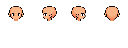
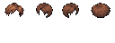

programation-world · S0-03
A · Frente refinado
Revisa el flequillo de A con mechones más definidos y una raya más clara. Compara las cuatro direcciones, el reposo y la marcha.
Comparar apariencia
Color del abrigo
Desactiva una capa para inspeccionar la composición de A. El original se mantiene como referencia al lado.
Preparando las capas locales…
Reposo · frente
Cuadros de 32 × 48 · anclaje (16, 46). En el resultado completo se reutilizan los ojos aprobados.
Reposo y cuatro poses de la dirección seleccionada
Inspeccionar las fuentes de las capas
La cabeza auxiliar y el cabello se exportan por separado. Al componer el avatar se reutilizan regiones del rostro y los ojos del atlas aprobado. Los ojos dibujados en la fuente auxiliar no reemplazan los ojos finales.

